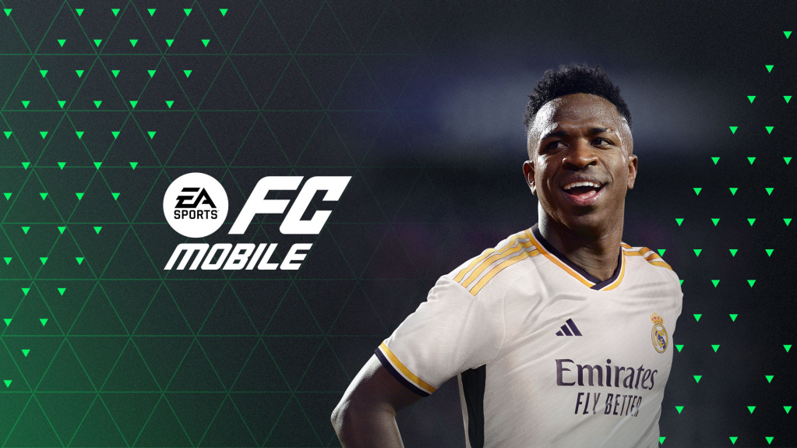

EA Sports es una división de la empresa estadounidense Electronic Arts que desarrolla y distribuye videojuegos de deportes.
EA Sports FC 24 es un videojuego de fútbol, desarrollado por EA, y publicado por EA Sports. Este juego marca la primera entrega de la serie EA Sports FC, tras la conclusión de la asociación de EA con FIFA, donde anteriormente se nombraba "FIFA- FIFA MOBILE"
Esta serie surgió como sucesora de la serie de videojuegos FIFA en 2023, luego que no se renovara el contrato de exclusividad de licencia de FIFA con EA Sports el cualno tardó en conseguir el licenciamiento de las principales ligas del mundo para su nuevo videojuego, siendo la Premier League una de las primeras en unirse. El 29 de septiembre de 2023 fue lanzado el primer videojuego de la nueva franquicia, EA Sports FC 24 para Nintendo Switch, PlayStation 4, PlayStation 5, Windows, Xbox One y Xbox Series X/S, tambien con una version "Mobile" disponible para Ios y Android, contando con el delantero del Manchester City Erling Haaland como protagonista de la portada de la edición estándar y al jugador del Real Madrid Vinicius Junior como protagonista de la edicion Mobile.
A continuacion, te mostraremos las versiones anteriores del ahora EA Sports FC, anteriormente llamado "FIFA FOOTBALL"